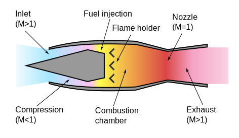

stumbling into aerodynamics
Home Posts About Me
Shock waves are impressive and slightly mysterious in the surprising power they seem to have. The have broken countless windows, damaged hearing, and stolen aircraft out of the sky.
"Stark Beauty" - NASA
Shock waves are normally only about \(10^{-6}\) m long, but they clearly appear on this thermal image because of the intense heat.
Shock waves appear when a body moves faster than the speed of sound through a medium. If you wish to break the sound barrier in standard atmospheric conditions, you must travel at 343 m/s. Breaking the sound barrier underwater is possible, but water tends to vaporize and form cavitation bubbles before a body reaches 1484 m/s, the speed of sound through water. The rate at which an aircraft travels is known as its velocity, but this can also be given as the Mach number. The Mach number is given by:
where \(u\) is the local velocity of the flow, or how fast the air is moving. \(c\) is the local speed of sound. It's important to remember that the Mach number can change even within the frame of the aircraft. For example, two types of jets that are designed to travel at supersonic speeds are the ramjet and the scramjet. In the ramjet, the flow slows to subsonic speeds inside of the engine for the injection and ignition of the fuel. While the aircraft carrying the engine is traveling faster than the speed of sound, there is a subsonic flow inside the engine. A scramjet is different as the flow of fluid through it is entirely supersonic. The issue with this type of engine is the lack of fans to push air into them. They cannot start from a standstill; aircrafts using these engines must be propelled by rockets until they reach the minimum airflow.

Supersonic flow changes the way aircraft behave. Aerodynamic properties shift away from the predictable into the dangerous. This is why aerodynamic research is still being done on supersonic flight. Particularly interesting is the research about reentry aerodynamics with Mach numbers in excess of 25 (that's quite fast). Airfoils are also shaped differently.
Supersonic airfoils are vertically and horizontally symmetrical and always have a camber line perfectly along the horizon.
--Aryn Harmon